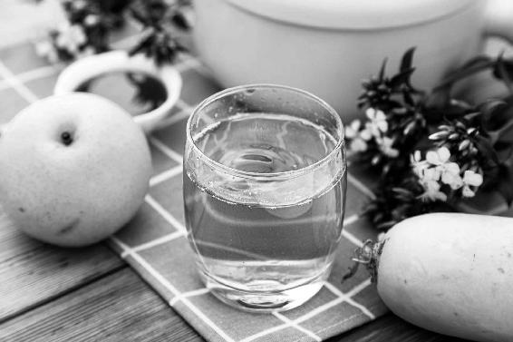

中医对于疫病防治有几千年的实践经验，有各种治疗疫病的药方和防疫病的方法可以参考使用。中医不用研究病毒本身，而是针对它引发的身体症状来治疗，有时几服药就能转危为安。

病毒的“新”，是指现代科学尚未对其有深入的了解，但它所引发的人体病症，例如发热、咳嗽、痰多、浑身酸痛、呼吸困难，等等，却是传统中医擅长治疗的。
每出现一种新型病毒，研究抑制它的现代药物需要时间，例如治疗SARS（重症急性呼吸综合征）的特效药研究了很多年，但是疾病不等人，此时正是中医药发挥优势之时。
中医对于疫病防治有几千年的实践经验，有各种治疗疫病的药方和防疫病的方法可以参考使用。中医不用研究病毒本身，而是针对它引发的身体症状来治疗，有时几服药就能转危为安。
在预防方面，中医药擅长的就是“治未病”——提升人体正气，祛湿化浊，解毒……身体的抗病能力增强了，就不容易感染，即便得病也更容易好转。
所以，疫情会过去，而基于中医药理论的预防方法和传统饮食抗病毒感染的方法却不会过时。
每当传染病暴发时，都会出来一些预防方。
例如，在新冠肺炎疫情最严峻的时候，全国有18个省发布了官方的中医药预防方案，再加上网络流传的民间方，让许多人不知如何选择。
还有的人拿到一个预防方就当宝，以为服下后就高枕无忧了。
其实，预防方不是万能的，如果服错了还会适得其反。
大多数人并不需要专门吃汤药来预防。汤药之所以不是食物，就因为它是专门“纠偏”的，所以对症才可服。
预防方，不是杀灭病毒，而是重在提升人体自身的抗病能力。
普通人群只需要做好起居防护，并用药食同源的饮食来预防就够了。
密切接触者、高危易感人群可以吃预防方，但是要选适合自己身体状况的。
怎样选方子呢？
首先，不要相信网络乱传的、没有可靠来源的药方。要看，就看卫健委发布的正规中药方。
特别是在每次传染病流行的初期，卫健委组织专家们根据临床病例的一手材料研究出的防治方案，是非常有用的信息，我们可以根据自身情况先分析，看有哪些可以参考。
有人疑惑，为什么不同省份开出的预防方不尽相同？这很正常，条条大路通罗马，只要方向对了，具体的方法可以有多种选择。同时，不同地域还有气候环境和人群体质不同，所以我们不要照搬药方，而要理解这些预防方案透露出来的本次疫病的防治重点，例如新冠肺炎的病机是“湿”，那么我们就可以在日常饮食中多加祛湿的食物，同时家里有湿气重的人，就可以进行重点预防。
这才是各种预防方真正对我们有用的方面：提示了防病的重点。
所以在疫情期不需要拿预防方当救命稻草，而疫情结束后，也不要认为时过境迁，这些方子没有价值了。
下面我以18个省发布的新冠肺炎预防方案为例做一个简单分析。
我特别希望，您在疫情过去以后，静下心来看这个分析，并从中得到启发，从而在下次时疫来临时，能够快速抓住防病重点，为自己正确选方；在平常年份，也能在流感季为全家人做好防护。
在新冠肺炎疫情期间，有18个省先后发布了中医药预防方案，它们有各自的地域特色，但有一点是相同的：重视用黄芪。
黄芪不仅在成人预防方里用，体虚易感儿童的预防方，也用黄芪。
这是中医的宝贵经验。 “正气存内，邪不可干。”要提升人体正气，增强抵抗力，黄芪是首选。
黄芪补气与人参不同，它专门补脾气和肺气，而且还能固表，也就是加固人体对外的防线，防止病毒入侵。
黄芪不仅功效强大，还是药食同源的，全家人包括孕妇都可以吃。
有疫情时，不是密切接触者或高危易感人群，不一定需要喝预防方。平时爱感冒，或者身体较虚的人，可以用黄芪食方来提升正气（参见本书第182页“提升正气的黄芪陈皮粥”）。
注意：已经感冒咳嗽的人，不可以用黄芪。
其实，黄芪最好是在平时吃，每年有规律地吃，时刻让身体充满“一身正气”，传染病来临时身体才能从容应对。
在《吃法决定活法》一书中，已经讲过如何顺时进补黄芪。
每年三伏，人体出汗多，容易气虚。气弱体虚的朋友，在三伏期间坚持每日喝黄芪粥，能够提升中气，增强免疫功能，到了秋冬不容易生病。
南方有几个省的预防方用了佩兰、藿香、苍术等来芳香化湿，北方有几个省也在密切接触感染者的预防方里用这些香药。
我也建议，普通人如果想预防病毒，可以每日吃一些辛香味的食物（比如香菜、葱、花椒、陈皮），它们能起到跟上面这些芳香化湿药相似的作用，同时可以用藿香、佩兰、苍术这些中药做成香包、药浴液、洗手液，拿来外用，加强防护。
各省发布的预防方，都很重视药食同源，一个方子中，大多数是药食同源的中药。有些省还专门发布了食疗方案。
唐代大医孙思邈在《千金方》中说过：“若能用食平疴，释情遣疾者，可谓良工。”
不依赖药物，只用食物就能治好疾病，这才是好医生啊！
比如陕西省的预防方，其中一味药是梨皮，这就是以食入药，很妙。
在《回家吃饭的智慧》中我曾写过，梨皮和梨肉不一样，梨皮止咳效果好，热咳的人可以用。
所以，大多数人用饮食防护就可以了。别小看食物的力量。
各省的预防方案中，不仅有汤药，也加入了佩戴香囊、中药熏蒸、足浴、艾灸等外治法。
这些都来自古人总结的防疫方法，建议大家多用，对于增强体质、提高人体抵抗力很有好处。
不仅是疫病流行时，平时经常用这些方法来保健也是很好的。
湖北省
① 防新型冠状病毒感染的肺炎一号方：
组成：苍术3克，金银花5克，陈皮3克，芦根2克，桑叶2克，生黄芪10克。（开水泡，代茶饮，7〜10天）
② 防新型冠状病毒感染的肺炎二号方：
组成：生黄芪10克，炒白术10克，防风10克，贯众6克，金银花10克，佩兰10克，陈皮6克。（煎服，每日一服，分两次，7〜10天）
陕西省
① 成人预防：
组成：生黄芪15克，炒白术10克，防风6克，炙百合30克，石斛10克，梨皮30克，桔梗10克，芦根30克，生甘草6克。
用法：药物用凉水浸泡30分钟，大火熬开后改为小火15分钟，煎煮两次，共取汁400毫升，分早晚两次服用，连服3〜5天。
② 儿童预防：
组成：生黄芪9克，炒白术6克，防风3克，玄参6克，炙百合9克，桔梗6克，厚朴6克，生甘草6克。
用法：药物用凉水浸泡30分钟，大火熬开后改为小火15分钟，煎煮两次，共取汁50〜100毫升，每日分2〜3次口服，连服3〜5天。
③ 食疗方案：
可适量食用荸荠、百合、莲藕、雪梨、银耳、山药、山楂等；可适量饮用白茶、茉莉花茶、金银花茶等。
河南省
适用于（疫病）流行期间普通人群的预防：
组成：紫草10克，赤小豆30克，绿豆30克，生甘草6克。
用法：一日一服，水煎服，每日2次，可连服6天，无不适可继续服用。
注意事项：脾胃虚寒、腹泻者慎用，孕妇慎用。
唐代大医孙思邈在他的名著《千金方》中引用医圣张仲景的话说：“仲景曰：人体平和，惟须好将养，勿妄服药。药势偏有所助，令人脏气不平，易受外患。”
这句话讲的是没病不能随意乱吃药。药是有偏性的，没病的人吃了会导致脏气不平，反而使体质变差，抵抗力下降，容易生病。
所以不是在疫区，没有密切接触感染者，也不是高危易感人群的，真的没有必要到处寻求预防的药方，或者买一些中成药，比如板蓝根颗粒、双黄连口服液等来随意服用。
药物易伤脾胃，反而影响人体正气。普通人选择药食同源的食材来防护就可以了。